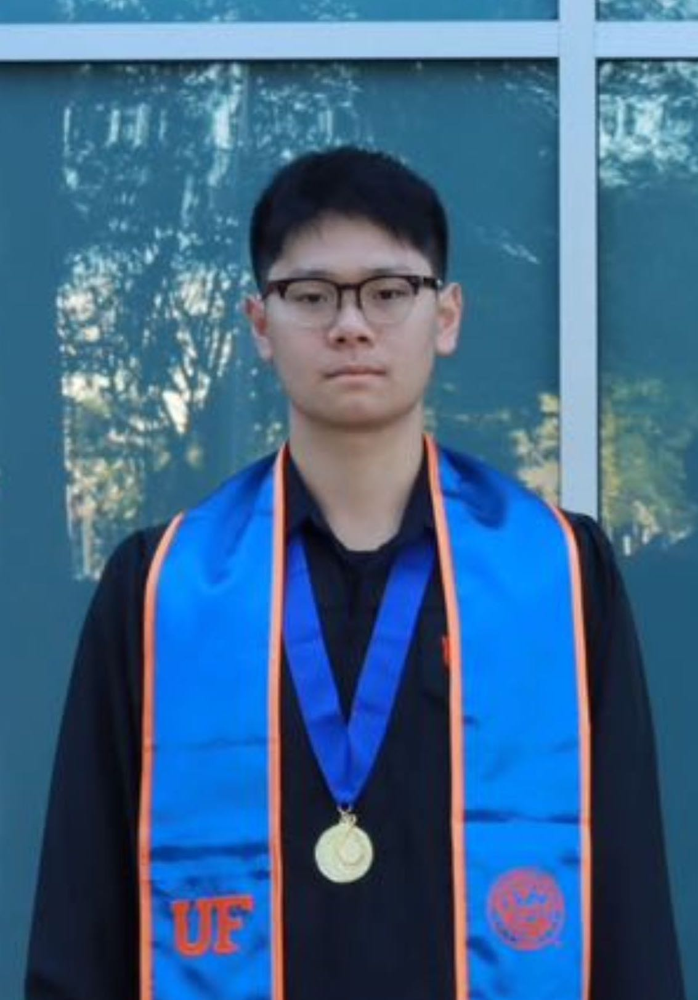

Peiran Liu
PhD Student
Purdue University
Email: liu3820@purdue.edu
I am a PhD student at Purdue University
News
| Feb 26, 2024 | Paper accepted @ CVPR 2024 🎉 |
|---|
Selected Publications
* indicates equal contributions.-
 CVPR
LaMPilot: An Open Benchmark Dataset for Autonomous Driving with Language Model ProgramsIn Proceedings of the IEEE/CVF Conference on Computer Vision and Pattern Recognition (CVPR) , 2024
CVPR
LaMPilot: An Open Benchmark Dataset for Autonomous Driving with Language Model ProgramsIn Proceedings of the IEEE/CVF Conference on Computer Vision and Pattern Recognition (CVPR) , 2024